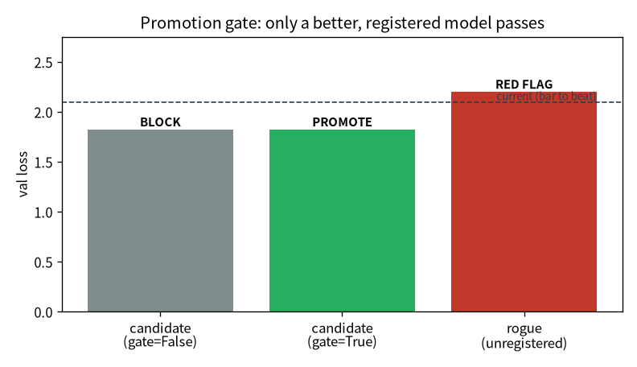

flowchart LR A["01 GPT"]-->B["02 零件"]-->C["03 效率"]-->D["04 資料"]-->E["05 評估"]-->F["06 服務"]-->G["07 治理"]-->H["08 漂移"] E -.後訓練.-> I["09 對齊"] classDef here fill:#c0392b,color:#fff,stroke:#7b241c,stroke-width:2px; class G here
7 模型治理：把稽核接到 ML
一句話：在銀行，任何上線的東西都要答得出稽核——這是誰、改了什麼、測過沒、誰批准。把同一套 骨架搬到 model checkpoint 上，就是模型治理。這是我從本行帶來、跟一般 ML 工程師最不一樣的地方。
注记這章的定位（讀之前先對齊期待）
假設你已經會：第 6 章把模型包成服務（章节 6）、第 5 章的評估判準。不需要稽核 / 合規背景。
學完你會：(1) 說出對「線上那顆模型」要答得出的稽核四問；(2) 逐行把治理的核心建起來—— 用 sha256 digest 當身份、用 promotion gate 程式擋上線；(3) 在你自己的 CPU 上親手證明 「digest 認內容不認檔名」、並看 gate 把不合格的候選 BLOCK 掉。這是治理/稽核背景轉進 ML 最差異化的 一段。本章 💻 配套程式 tiny_serve.py 純 CPU、約一分鐘。
提示🎯 給技術主管：本章關鍵術語速查（懂的人可跳過）
不必親手實作也能跟上——每個術語一句白話 + 為什麼你該在意。
- model digest（sha256）：用內容指紋當模型身份。在意它：「線上跑的到底是哪顆」——檔名會騙人，digest 不會。
- lineage（血緣）：模型綁住資料 / 設定 / git commit。在意它：稽核要答得出「這顆用什麼訓的」。
- model card：人讀的模型單據，進 git。在意它：審計軌跡的一部分。
- promotion gate（促上線閘）：沒過品質 / 資料檢查就擋下上線。在意它：上線被程式 enforce，不是「誰想推就推」。
- 稽核四問：哪一個 / 吃什麼訓的 / 表現如何 / 憑什麼上線。在意它：這就是把銀行治理接到 ML 的骨架。
7.1 模型治理＝對「線上的模型」答得出四個稽核問題
這是整本書我最想經營的一段。在銀行，任何上線的東西都要能回答稽核：這是誰改的、改了什麼、測過沒、 誰批准。我把同一套骨架搬到模型上——只是對象從應用程式換成 model checkpoint：
重要治理的四問
- 哪一個？ 模型身份用 ckpt 的 sha256 digest——像 container image digest 或 cosign 簽章，不靠 檔名。檔名會騙人、會被覆寫；digest 是內容的指紋。
- 吃什麼訓的？ lineage（血緣）：每筆註冊綁上資料 digest + 資料品質 gate 結果 + config + git commit。 問「這顆模型是用哪批資料、哪份設定、哪個 commit 訓的」要答得出來。
- 表現如何？ model card：一份人讀的單據（
registry/cards/<digest>.md），記錄這顆模型的評估數字、 用途、限制。而且它進 git——成為審計軌跡的一部分。 - 憑什麼上線？ promotion gate：沒過資料品質 gate、沒過評估，就擋下——上線不是「誰想推就推」， 是被程式 enforce 的。服務端
/model會回報自己跑的 digest + registry 狀態，確認線上那顆是不是被批准 的那顆（回報UNREGISTERED就是稽核紅旗）。
這四問為什麼重要？因為模型治理的本質，跟 IT 變更管理是同一件事——只是多了「資料」這個變數。 而「要可審計軌跡、要 gate、要能回答稽核」正是我的本能。這是治理/稽核背景轉進 ML 的最大優勢， 不是包袱。
7.2 逐行把治理建起來
四問裡最該親手寫一次的是第 1 問（身份）和第 4 問（gate）。我們用 tiny_serve.py 逐行建出來。
第 0 步——身份 = 權重 bytes 的 sha256。 不用檔名當身份——檔名會被改、被覆寫。把 checkpoint 的 權重序列化後算 sha256，內容的指紋就是身份（概念上等同 container image digest / cosign 簽章）：
第 1 步——台帳（registry）綁住 lineage。 每顆模型的 digest 對應一筆紀錄：評估數字 + 資料品質 gate 結果 + git commit。這就是「吃什麼訓的、表現如何」答得出來的來源：
第 2 步——promotion gate 用程式 enforce「憑什麼上線」。 查不到台帳 → 紅旗；沒過資料 gate → 擋； 沒比現行更好 → 擋。上線不是「誰想推就推」，是被這幾行擋住：
7.3 💻 在你的機器上：digest 身份 + promotion gate
治理聽起來抽象，但它的核心是可執行、可親手驗證的。配套程式 tiny_serve.py（純 CPU、約一分鐘） 訓兩顆小模型（current 少訓、candidate 多訓），把上面那幾行跑一遍：
在我的 Framework 16（純 CPU）上：
=== 稽核問題 1：哪一個？（digest 不靠檔名）===
current digest: 12a3af3dcb903393… val 2.097
candidate digest: ef12351883b11c70… val 1.825
把 current 存成 modelA.pt / 又存成 best_FINAL.pt → digest 變嗎？ True（不變，認內容不認檔名）
偷改一個權重 (+1e-4) → digest 變嗎？ True（立刻變）
=== 稽核問題 4：憑什麼上線？（promotion gate 用程式 enforce）===
候選（資料 gate=False）：BLOCK：資料品質 gate 未過
候選（資料 gate=True ）：PROMOTE：通過（1.825 < 2.097 且資料 gate ✅）
未註冊的野模型：UNREGISTERED（台帳查無此模型，稽核紅旗）怎麼讀：
- 身份認內容不認檔名：同一顆模型存成兩個不同檔名，digest 不變；偷偷改一個權重
+1e-4， digest 立刻變。所以「線上跑的到底是哪顆」用 digest 問，檔名騙不了它。 - gate 真的會擋：同一顆 candidate，資料 gate=False 時被 BLOCK、補過後才 PROMOTE； 一顆沒註冊的野模型想上線直接 UNREGISTERED 紅旗。上線被程式 enforce，不是口頭約定。
图 7.1 把 gate 的判斷畫出來——注意左兩根是同一顆候選（val loss 都 1.825），差別只在資料 gate：

重要這就是「把稽核接到 ML」的最小可執行核心
你親手跑的這幾行，就是銀行對任何上線系統要的東西的縮影：身份可驗證、決策可 enforce、軌跡可 追溯。把對象從應用程式換成 model checkpoint，骨架一模一樣——這是你的稽核本能在 ML 領域稀缺、 而你有的差異化優勢。
7.4 帶走什麼
- 模型治理＝對線上模型答得出稽核四問（哪一個 / 吃什麼訓的 / 表現如何 / 憑什麼上線），骨架跟 IT 變更管理一致。
- 身份用 sha256 digest 不靠檔名；上線用 promotion gate 程式 enforce，不靠口頭約定。
- 治理/稽核背景在 MLOps 是差異化優勢——你的本能（要審計軌跡、要 gate）正是這個領域稀缺的。
- 模型上線不是終點——它會腐壞，要持續監控與重訓（下一章 章节 8）。
7.5 練習
注记1（先預測）：digest 對「改名」和「改一個 bit」分別怎麼反應？
sha256 是內容雜湊。先寫下你的預測：(a) 把 checkpoint 複製成另一個檔名、(b) 把某個權重改動 10^{-7}，digest 會不會變？
提示參考答案
- 不變——digest 只看內容 bytes，跟檔名無關（所以檔名不能當身份）。(b) 變——sha256 對輸入任何 一個 bit 的改動都會產生完全不同的輸出（雪崩效應）。這正是為什麼用 digest 當身份：它對「假裝沒改」 零容忍。在
tiny_serve.py把改動值從1e-4調到1e-9試試，digest 一樣會變。
注记2（動手）：加第三條 gate 規則
promote 現在檢查「有註冊 / 過資料 gate / 比現行更好」三條。加第四條——例如「model card 必須存在」 或「git_commit 不能為空」——讓不合規的候選也被擋。
提示參考答案
重點是體會 gate 是可組合的程式規則：每多一條合規要求，就多一個 if ... return False。這跟稽核 疊控制項是同一個思路——把「上線前要滿足什麼」固化成程式，而不是靠人記得檢查。真實專案的 gate 還會 綁 lineage（資料 digest、config、commit），讓「吃什麼訓的」也答得出來。
警告3（弄壞）：拔掉 gate，讓野模型直接上線
把 promote 改成「永遠回傳 True」（等於沒有 gate），讓那顆 UNREGISTERED 的野模型也能上線。 這對應稽核裡的什麼風險？
提示參考答案
等於「誰想推就推、無審批、無軌跡」——線上跑的是哪顆、誰批准的、用什麼資料訓的，全都答不出來， 正是稽核最怕的「無法追溯的變更」。gate 存在的意義就是把這個風險用程式擋死。這也解釋了服務端 /model 為什麼要回報自己的 digest + 狀態：回報 UNREGISTERED 就是一面該立刻處理的紅旗。